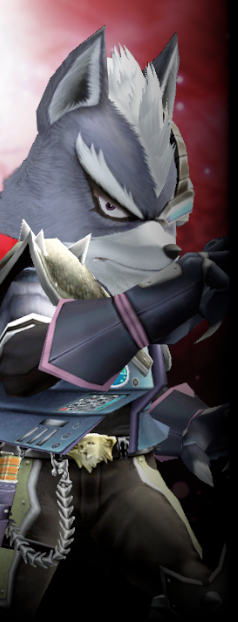

▼侵略金属【 ヘル・ドラド 】
【暴虐宝玉デスメタル】を首領とする怪人組織。
異空間【ヤミノイチバ】を拠点とし、デスメタルから生まれた【魔製石器】、
およびその魔製石器から生まれた【駄製石器】によって構成される。
|
|
暴虐宝玉デスメタル
【ヘル・ドラド】首領。
かつてユグドラシル全体に滞留するＰＳＹ因子と空間が反応し、 今はまだ、それ以上の事は謎に包まれている。 |
|
 |
ウォルフラム
機械製のモノクルに白衣という出で立ちの怪人博士。
多くの駄製石器およびゴクアクセサリーズの設計・創造を担うマッドサイエンティスト。
己の才能を信じて疑わない自信家で、「最高傑作」が口癖。
立場上、他の魔製石器に対しても顔は広いが、仲間意識は皆無。
「アォォォーーーーーーン！ おのれユグレンジャァァア！ 次こそは憶えちょれェェーーッ！」 |